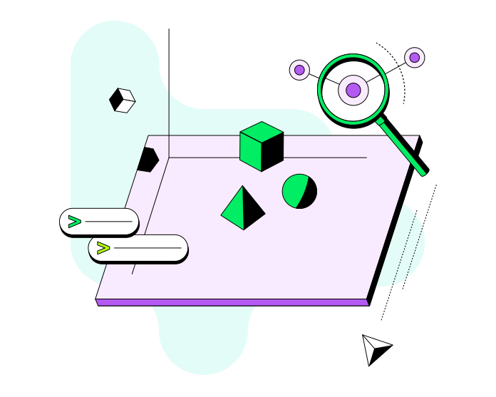
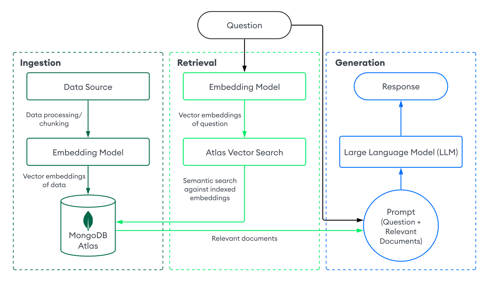

Advanced Word Embeddings & Semantic Search
In-depth guide using Hugging Face Transformers and MongoDB Vector Store
What Are Word Embeddings?
- Dense vector representations of text
- Preserve semantic similarity: "king - man + woman ≈ queen"
- Contextual embeddings (e.g., BERT) outperform static ones (e.g., Word2Vec)


Hugging Face Sentence Transformers
all-mpnet-base-v2"Our model is intented to be used as a sentence and short paragraph encoder. Given an input text, it ouptuts a vector which captures the semantic information. The sentence vector may be used for information retrieval, clustering or sentence similarity tasks. By default, input text longer than 384 word pieces is truncated."
Using Sentence Transformers (Simpler)
Example: Getting contextual embeddings with 🤗 Transformers
from sentence_transformers import SentenceTransformer
model = SentenceTransformer("all-MiniLM-L6-v2")
sentences = ["Semantic search is powerful", "Vector search with MongoDB"]
embeddings = model.encode(sentences)
Similarity Computation
Using cosine similarity for semantic comparison
from torch.nn.functional import cosine_similarity
query = model.encode("Search engine using AI", convert_to_tensor=True)
similarities = cosine_similarity(query, embeddings)
print(similarities)
Semantic Search Architecture
- Step 1: Embed all documents and store them
- Step 2: Embed query at runtime
- Step 3: Use nearest-neighbor search to retrieve top results
What is RAG?
Retrieval-Augmented Generation (RAG) is an approach that combines retrieval-based and generation-based models.
- Uses a knowledge retriever to fetch relevant documents from a large corpus.
- Feeds those documents into a language model to generate context-aware responses.
Why Use RAG?
- Overcomes the limitations of fixed knowledge in language models.
- Provides up-to-date and domain-specific information.
- Improves factual accuracy and reduces hallucination.
- Enables smaller models to perform better with external knowledge.
How RAG Works
- Query Encoding: User input is encoded into a dense vector. (Embeddings!)
- Document Retrieval: Vector used to fetch relevant documents via similarity search.
- Generation: Retrieved content passed to a generative model to produce the final answer.
RAG = Retrieve + Read + Generate

sourceVector Store with MongoDB
- MongoDB Atlas supports native vector search
- Efficient indexing + metadata filtering
- Scales to millions of vectors
.svg)
Storing Vectors in MongoDB
Example schema:
{
"text": "Semantic search is powerful",
"embedding": [0.12, -0.08, ..., 0.21],
"metadata": {
"source": "HuggingFace",
"tags": ["NLP", "semantic"]
}
}
Vector Index Creation (MongoDB)
{
"fields": [
{
"path": "movie_embedding_hf",
"type": "vector",
"numDimensions": 768,
"similarity": "cosine"
}
]
}
Create via Atlas UI or MongoDB Atlas CLI
Full Semantic Search Pipeline
- Use Hugging Face Transformers to encode text
- Store embeddings + metadata in MongoDB Atlas
- create vector index in Atlas
- Use Langchain library (MongoDBAtlasVectorSearch) for semantic retrieval
🎬 Build a MongoDB-Powered Movie Chatbot
with Vector Search and LLMs
📝 Objective
- MongoDB Atlas
- HuggingFace Transformers
- LangChain
- Ollama (local LLM)
- Streamlit UI
🎯 Learning Goals
- Generate and store document embeddings
- Configure MongoDB Atlas vector search
- Build RAG pipeline with LangChain
- Run local LLM via Ollama
- Create a user interface with Streamlit
🧩 Part 1: Setup & Dataset
Steps:
- Clone the project (https://github.com/normansuesstrunk/mongo-rag
- Install dependencies
- Load
sample_mflix.moviesin MongoDB Atlas
✅ Deliverable: Verify the dataset exists in the collection
🧠 Part 2: Embedding Movie Metadata
- Set up
MONGO_CONNECTIONin .env - Use HuggingFace model to embed fields:
title,plot,cast, etc. - Store in MongoDB as
movie_embedding_hf
✅ Deliverable:
{ movie_embedding_hf: { $exists: true } }🗂️ Part 3: Create a Vector Index
- Go to Atlas > Search Indexes
- Create index on
movie_embedding_hf - Use:
type: "vector"numDimensions: 768similarity: "cosine"
✅ Deliverable: Show working vector index
🖥️ Part 4: Streamlit RAG Interface
- Use LangChain's
MongoDBAtlasVectorSearch - Connect to LLM via
OllamaLLM - Build interface with Streamlit
App flow:
- User enters a question
- Retrieve relevant documents
- Query LLM for an answer
✅ Deliverable: Working Streamlit app
💡 Example Queries
- “List movies about time travel.”
- “Show family-friendly movies directed by Spielberg.”
- “Which films involve AI or robots?”
🧠 Challenge 1: Hybrid Search
- Combine vector similarity with keyword filters (e.g., genres, year)
- Use MongoDB Atlas `$search` with compound clauses
🧠 Challenge 2: Conversational Memory
- Retain chat history and previous queries
- Use LangChain’s memory objects like `ConversationBufferMemory`
🧠 Challenge 3: Custom Prompt Engineering
- Create your own prompt templates for different user intents
- Use LangChain’s `PromptTemplate` with structured formatting
🧠 Challenge 4: Mongo Query Generation with LLM
- Use the LLM to convert user intent into raw MongoDB queries
- Provide the schema and examples to guide generation
- Display or execute the query in a safe sandbox mode
📝 Submission
- Demo video or screenshots
- 1-page reflection
📦 Key Concepts
- Semantic search with vector embeddings
- MongoDB Atlas vector index
- Local LLM with Ollama
- LangChain retrieval pipeline
- Full-stack AI interface